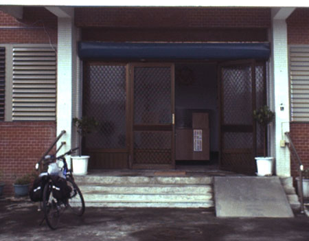
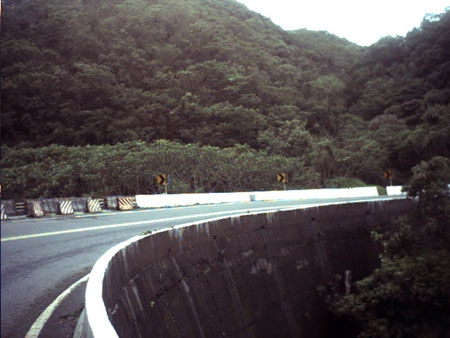
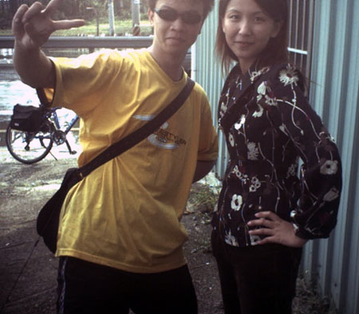

氣象新聞說杜鵑颱風已經遠離台灣，海上和陸上颱風警報均已解除。
躲了兩天的颱風，今天可以在重新上路了，時間是星期三。
早上六點起床，外面嘩啦啦的陰雨下個不停。
解除了颱風警報，卻又換來一個新的豪大雨警報。
這邊距離高雄還有139公里，有的騎了。
梳洗過後，民宿的老闆娘勸我今天先不要走，因為外面雨還很大，叫我多住一天比較安全。
心意已決，六點半一邊看電視一邊吃完早餐，香腸、土司夾蛋，喝木瓜+芒果+蜂蜜果汁。
在民宿躲颱風的這兩天，我用小白幫老闆娘做了一個簡單的網站，希望能幫忙增加一些客源。
﹦台東知本全友民宿﹦
這次出來我只帶了一雙球鞋，沒有帶拖鞋或是涼鞋。
可是這種天氣穿球鞋出門，一定會溼透。跟老闆娘要了一雙拖鞋，她欣然答應。
自己的鞋子則用塑膠袋包起來，馬鞍背包裝不下，所以綁在車子後面帶著走。
老闆娘也給我了一罐昨天自己炒的花生米，可以讓我路上帶著吃。
七點離開民宿，馬路上的滔滔江水，有如我對星爺的敬意一般，從上坡往下坡連綿不絕的沖刷。
而且雨還沒有停，問題是沒有買雨衣 =.= 而且車子沒有加裝檔泥板，所以今天一定會很淒慘。
才剛出門不久，雨勢忽然增大，這不是穿一件風衣就可以輕易擋住。
自己身上淋溼到還好，我比較擔心車上包包裡的東西，如果包進水了，那就完蛋了。
裡面有乾淨的衣物、地圖、電腦、MD、數位相機、兔子電池...。
當初是買Giant的包包，號稱是防水，我自己也沒有測試過，所以不清楚實際情況如何。
7:30因為雨勢實在太大，逼不得已只好躲到小商店去買雨衣穿。
雨衣雖然是買到了（20元一件），不過有穿跟沒穿，基本上沒什麼差異。
沒穿的話，會百分之百淋溼；有穿的話，只會淋溼百分之九十五。
我穿上黃色這件衣服，外面穿風衣，頭上戴蘋果帽，最外面再穿一件雨衣。
這個雨衣也挺好笑，寫著成人用，可是袖子居然是短袖 =.=
穿起來長度也只到我的腰部而已。
出門前看新聞，電視就有說台九線沿線有多處坍方，以及路基流失，將有交通管制。
實際騎在台九線，親眼看到的情形是像下面這個樣子的。
颱風讓海的表情整個改變，原本燦藍的海水，現在一眼望去全都是灰色，充滿肅殺之氣。
騎到快九點，雨總算是停了，身上全部溼答答，車上的包包看起來則沒什麼災情。
實際上去檢查包包裡的災情，結果....
因為防水防的不是徹底，所以雨水還是滲了進去，而且滲進去之後，裡面防水...所以水漏不出來。
就累積在包包裡形成水窪，然後我包包裡的所有東西就泡在這個水窪裡，像魚缸一樣。
直到我發現這個事實為止，可惜已經太晚了！
損失非常的慘重，衣服全溼，MD音樂片溼，棉花棒溼，電池生鏽，iBook包在抗震包包裡。
包包抗震可是不防水，不防就算了，它甚至還吸水，讓我的iBook從屁股溼到頭，還好沒壞。
MD跟數位相機則沾上一塵水霧氣，令人擔心會不會生鏽壞掉？
10:15，抵達大武，快要離開台東了，本來想去要點水喝，但是沒水。
這一路上我所經過的地方，全部都停電。
一口氣從台東-太馬里停到屏東-水底寮，這一百多公里，通•通•沒•電。
連7-11也遭了殃，裡頭黑壓壓一片。

到處都要不到水喝（可能是馬達不能用所以沒水吧？），但是攜帶的水又已經喝完。
正在煩惱的時候，看到衛生所，裡面也是黑壓壓的一片，有幾個鄉民再看病。
去裡面問看看有沒有水可以喝？答案是有飲水機，可是飲水機已經兩天沒有電了，
如果我敢喝的話就裝去喝吧，那...就裝個一杯走吧！
今天本來的目標是要騎到鵝鑾鼻燈塔去，然後晚上睡在燈塔下面。
所以我要從台九線接到台26線才行，上午11:00，來到了兩條路交會的地方。
一開始我還找不到台26線，因為好小一條路，像單行道而已，而且幾乎沒有車子。
真令人擔心從這邊走真的能通到鵝鑾鼻嗎？
果然才剛走進去，進到第一個村子，就看到警察局的牆壁上寫著
『往旭海此路不通，請退回台九公路行駛 一路平安！』
這條路是不通往鵝鑾鼻的，回頭是岸。

我還搞不清楚是怎麼一回事，地圖上明明就畫說可以通，所以去問警察伯伯，
他跟我說是我的地圖畫錯了 /_\
真是沒有辦法，只好走回台九線，今天晚上不睡鵝鑾鼻了，改往高雄騎好了。

這一台是阿魯借給我的MD，他現在人在當兵，剃了頭之後長得很像是 鄧安寧 :D
咳咳...我帶了6片MD出門，都是日本樂團Globe的歌，
他們有一首歌叫做『So far away from home』，很好聽。
歡成中文是『遠離家鄉』∼聽的時候真的很有環島外出流浪的氣氛。
不是孤單的感覺，而是一種豪邁的氣魄感，天地之下，浪跡天涯！
接回台九線繼續騎，早上十一點時進入南迴公路，南迴跟北宜還有蘇花比起來，
難度應該比北宜稍難一點點，或是因為颱風剛過就跑來騎，所以讓我覺得南迴有點難騎。

沿路都是被颱風吹倒的樹枝、樹葉、樹幹
還有大小不一的落石

以及從山上宣洩而下，流到馬路上的大水
這些惡劣因素都增加了不少騎乘時的危險跟困難度。
本來想在南迴沿路的小村正吃午餐，但是停電，所以全部的商店都休息。
他們自己也沒有東西吃，更何況是賣給你了。
我之前在花蓮買的名產還有剩，肚子咕嚕咕嚕叫，我就很省著吃，慢慢的把花蓮薯吃到肚子裡。
花蓮薯很甜，吃了會口渴，在吃花蓮薯的當時，我想到了村上春樹的一本遊記『雨天．炎天』。
書裡面說他跟一個攝影師一起去土耳其，去做徒步的寺廟參訪之旅。
每到一間寺廟，廟方都會給予一種很甜很甜的點心讓你吃。
一開始實在是甜到吃不下去，只咬了一口就放下不再動它。
隨著日子慢慢過去，到了一家新的寺廟時，第一件想做的事情，
就是趕快去吃那種很甜很甜的點心，因為甜食可以快速補充流失的體力，
到後來變得很依賴這種食物。我覺得，還好我有買一樣是很甜很甜的花蓮薯。
下午一點，經過了草埔，這邊跟其他先前我所經過的地方一樣，停電，沒水喝，有災情。
我的手機從進入南迴之後，就處於沒有訊號的狀態，讓我想打電話出去都不行。
一直到了下南迴，手機才又重新有訊號。沿路都有看到台電人員在搶修電力。
因為草埔沒有水跟食物可以吃，所以沒有停留就繼續往前走。
雨已經停了很久，停了之後一直處於涼爽陰天的天氣。
下午一點四十五分，太陽又重新露面，一出來氣溫馬上高升。
這一路上都沒有補給到水份已經很痛苦了，現在又來這麼一下，真是又累又渴....
南迴公路上的土產店屋頂，被颱風吹到馬路上去了。
下午兩點，離開南迴，抵達楓港，這裡算是個不大不小的漁港村莊。
楓港有很多攤販在賣『烤鳥魷魚』，究竟『鳥魷魚』是種什麼樣的生物呢？
撇開魷魚不談，『烤鳥』，賣的不是烤雞肉，而是烤伯勞鳥，這是保育類的生物。
屏東有三寶，其中一寶是『洋蔥』，我也是看到書上介紹才知道的。
講到洋蔥就想到一本書，可以歸類為兒童讀物，書名是『洞』。
這本書內容是有關於，洋蔥，處罰營，教官，一吻奪命的女盜賊，吉普賽女人，大豬，老師，
挖洞，毒蜥蜴，零蛋，還有衰鬼家庭的故事，是本非常∼非常好看的書，絕對值得一看！
騎下南迴之後，台九線就此結束，東海岸也靠一段落了。
路標說離高雄還有78公里，在楓港稍作休息一會。
才往前騎離開楓港，就發生了一件令我始料未及的事情.....我的單車後輪爆胎了。
我沒有帶備胎以及修車的工具組，所以一但爆胎，就沒救了...
只能找腳踏車店來幫忙修理，去問了附近經過的機車騎士，他們的回答更令人沮喪。
『楓港沒有腳踏車店』
我牽著腳踏車，非常的無助，很後悔自己為什麼沒有帶修車的工具。
颱風過後，路上到處都是碎玻璃跟碎招牌，還有滿地的碎石頭。
一不小心騎過去，輪胎就被刺破了....
邊牽車往前走，邊研究該怎麼辦...
最後只想出『攔車，搭便車去有腳踏車的城鎮修車』，這個方法。
拿定主意之後就開始攔車，但這只是另一個令人沮喪的開始。
我站在路旁邊，腳踏車停好，當我看見有藍色的小貨車，或是工程車時，
我就奮力的揮動雙手，嘴裡喊著『請停車！停車∼∼！！』
然後看著車輛呼嘯而過，完全無視我的求援。
每攔車失敗一次，心情就更加的沈重.....怎麼會發生這種事呢！？
為什麼車子會爆胎！？為什麼沒有人肯停車幫我！？
我在路邊攔了半小時的車子，總算在兩點四十分，有一輛好心的貨車停了下來。
司機正在運送發電機到停電的地方去，他說可以載我到水底寮
那邊有學校，所以一定會有腳踏車店，我們把腳踏車放到他的卡車後面
然後我跟他坐在駕駛座裡。我真的很感謝他....肯停下來幫助我。
開了十分鐘的車，從楓港到了水底寮，我把車子從卡車上牽下來，跟司機鞠躬道謝。
然後問路人這附近哪裡有腳踏車店，然後就把車子牽過去修理。
換一個新的內胎，修車費用一百元，很便宜，而且老闆還讓我裝水。

修好之後，開心的踩著腳踏車往高雄走。
現在就算叫我重新爬一次蘇花公路，我也願意！只要腳踏車不要壞，什麼都沒問題！
屏東的災情挺嚴重的，很多商家的招牌都歪斜或是掉在地上。
連電線桿也倒了好幾根，難怪會造成大停電。
農作物，完全沈默

前方的路上也出現了積水，乍看之下積的蠻深的樣子，我先停在路旁準備準備一下。
停車在路邊把相機中的照片存到電腦裡面去，這時候出現一位美女過來跟我講話。
一時之間我還弄不清楚她是做什麼的。
『她問我說為什麼要拿電腦出來？』『我在這邊做什麼？』
我就一一的回答她的問題，對於美女的疑問，我絕對樂意回答。
後來得知她是中天新聞台的記者-陳淑容，要來拍路上淹大水的新聞，然後剛好碰到我。
我跟女記者還有男攝影師（有點像是長頸鹿）聊天，然後拍了一張照片 :P

休息完就要騎淹水的路了，腳踏車不怕淹水，只要不要淹的太高，騎不動就沒事。
以及不要被經過的車輛噴水就好。
4:40分抵達東港，5:10過完橋，進入高雄縣了，粉給它工業區樣。
才騎一個小時，今天爆胎的陰影還沒有散去，又發生了一件慘劇。
腳踏車的鏈子，居然斷掉了！？！？！？也就是說根本沒辦法騎了！
自己在路邊修了半天，雙手沾滿黑油，髒的可憐。
但是沒有工具根本就沒辦法將斷掉的車鏈接起來。
牽著腳踏車在高雄找腳踏車行，走了半個小時，最後在中山國中前找到車行。
跟老闆借了工具，自己把車鏈接起來，但是覺得車鏈剛斷過，騎起來不安心。
所以之後就不敢踩踏板太重，一路都慢慢的騎。
肚子很餓！！！！今天沒有吃午餐，除了在民宿吃的早餐跟路上吃的花蓮薯之外，我什麼也沒吃！
修好車之後，六點半，吃萬巒豬腳飯當晚餐 :D 紅茶無限暢飲唷！一份80元。
吃飽飯，大約八點的時候我走到了高雄的鬧區，
一路經過了，一心、二聖、三多、四維、五福、六和、七賢、八德、九如、十全這幾條幹道。
路名簡單好記，像我這樣的路痴最喜歡就是這種簡易的棋子路了。
雖然到高雄的時候已經很晚了，八點多，但是今天的目標要騎到台南，睡同學家。
所以現在還沒有辦法休息，還要騎一段不算近的距離。
問警察伯伯台南怎麼走比較容易？答案是走『民族路』，也就是所謂的『台一線』。
環島，東海岸就走『台九線』，西海岸就走『台一線』，簡單好走不會迷路。
今天在經歷了爆胎跟車鏈斷掉之後，我的倒楣運還沒有結束。
我騎車的時候會把手機放在褲子的口袋裡，有人打過來的話可以感覺到震動。
結果騎到一半聽到有咖拉咖拉的聲音，頭往後面一看，原來是放在口袋的手機掉下去了！
趕快回頭要跑過去撿，結果突然有四台機車快速經過。
我大喊著『不∼要∼碾∼過∼去∼呀！』，前三輛機車都平安的閃過了我的手機。
第四輛車則給它直接碾過去，我聽到咖差一聲，我也不用過去撿了，因為手機彈回我的腳邊來。
手機上的電池被撞開，跑到另一個方向去....路旁的歐巴桑還說『撞成這樣，沒救了啦！』
我傷心的撿起手機和電池，然後組合成一隻完整的手機。
一邊禱告一邊按下電源鈕，結果開機成功 ^__^
了不起的手機，被機車（兩人雙載）高速碾過，還能使用唷！牌子是Motoroal-T191。
從高雄往台南的路上，也沒什麼路燈，還好沒下雨就是了，騎的有點累人，因為搞不清楚有多遠。
總之，等我騎到台南火車站的時候，已經是晚上十點半。
好小孩請不要學我，我今天的騎乘時間約十六個小時，屁股很痛，會長痔瘡。
等同學到車站來接我，然後我跟著他的機車往租屋處走。
一到他的宿舍，我第一件事情就是先洗一個舒舒服服的熱水澡！
然後把被雨淋溼的衣服全部都拿去洗衣機洗，我則暫時穿同學的衣服。
小白也髒兮兮的，水甚至流到鍵盤底下，要把鍵盤拆下來才能擦乾淨。
整個包包裡有如災區，說有多慘就有多慘，把東西都拿出來曬乾，希望乾了還能用。
借用同學的網路上網，收收信件，有一拖拉庫的打氣信，跟我說環島加油！看了真開心。
等把東西都弄好，時間已經是凌晨兩點多了，晚到沒有精神寫遊記，就去地板睡覺。
半夜兩個人身體都不太舒服，我想拉肚子，他想吐，不知道吃了什麼奇怪的東西....
同學養了一隻黑貓，叫做Gucci，半夜活動力超強，東跳西跳的，不時從我的肚子上踩過去，很皮。
本日花費：雨衣20元，修車換內胎100元，豬腳飯80元，一共200元。